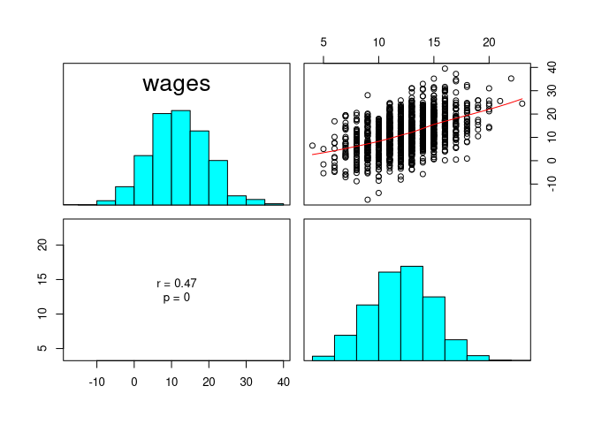
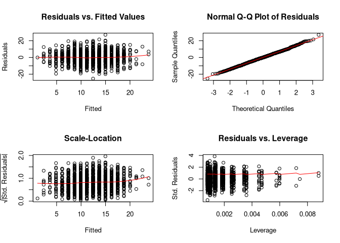

Ivan Jacob Agaloos Pesigan 2020-08-08


jeksterslabRlinreg is a collection of functions that I find useful in studying linear regression concepts and methods.
Installation
You can install the released version of jeksterslabRlinreg from GitHub with:
library(devtools) install_github("jeksterslabds/jeksterslabRlinreg")
Example
Data
In this hypothetical example, we are interested in the association between wages and education. The regressor variable is years of education. The regressand variable is hourly wage in US dollars.
#> constant education
#> [1,] 1 6
#> [2,] 1 13
#> [3,] 1 12
#> [4,] 1 14
#> [5,] 1 12
#> [6,] 1 11
#> wages
#> [1,] 4.470430
#> [2,] 25.222526
#> [3,] 13.249219
#> [4,] 8.600315
#> [5,] 9.930679
#> [6,] 9.513343
jeksterslabRlinreg::linreg()
The jeksterslabRlinreg::linreg() function fits a linear regression model using X and y. In this example, X consists of a column of constants and years of education and y consists of hourly wages in US dollars.
The output includes the following:
- Model assessment
- ANOVA table
- Table of regression coefficients with the following columns
- Regression coefficients
- Standard errors
- t statistic
- p value
- Standardized coefficients
- Confidence intervals (0.05, 0.5, 2.5, 97.5, 99.5, 99.95)
- Means and standard deviations
- Scatterplot matrix
- Residual plots
jeksterslabRlinreg::linreg( X = X, y = y ) #> #> Model Assessment: #> Value #> RSS 61851.60 #> MSE 47.98 #> RMSE 6.93 #> R-squared 0.19 #> Adj. R-squared 0.19 #> #> ANOVA Table: #> df SS MS F p #> Model 1 14385.06 14385.05779 299.3224 1.860578e-60 #> Error 1287 61851.60 48.05874 NA NA #> Total 1288 76236.66 NA NA NA #> #> Coefficients: #> coef se t p #> Intercept -3.333048 0.88771657 -3.754631 1.813421e-04 #> education 1.189101 0.06873046 17.300936 1.860578e-60 #> #> Standardized Coefficients: #> Textbook standard errors are used. #> [,1] [,2] [,3] [,4] #> education 0.4343841 0.02510755 17.30094 1.860578e-60 #> #> Confidence Intervals - Regression Coefficients: #> ci_0.05 ci_0.5 ci_2.5 ci_97.5 ci_99.5 ci_99.95 #> Intercept -6.2608286 -5.623051 -5.074579 -1.591518 -1.043046 -0.4052681 #> education 0.9624212 1.011800 1.054265 1.323937 1.366402 1.4157814 #> #> Confidence Intervals - Standardized Slopes: #> [,1] [,2] [,3] [,4] [,5] [,6] #> education 0.3515768 0.3696153 0.3851279 0.4836403 0.4991529 0.5171913 #> #> Means and Standard Deviations: #> Mean SD #> wages 11.65756 7.693501 #> education 12.60667 2.810470 #> Warning in cor(x = x, y = y): the standard deviation is zero #> Warning in cor(x, y): the standard deviation is zero #> Warning in cor(x = x, y = y): the standard deviation is zero #> Warning in cor(x, y): the standard deviation is zero

See GitHub Pages for package documentation.